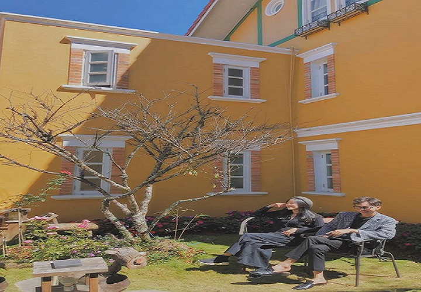
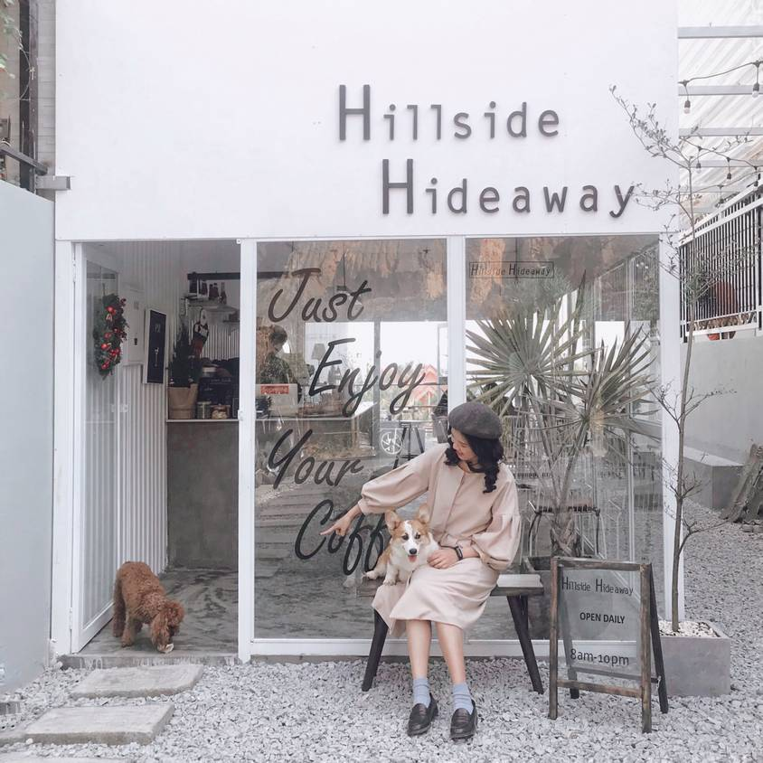

-
1. Amazing Coffee Đà Lạt
Đà Lạt là mảnh đất của nhiều điểm check-in đặc sắc, nhất là các quán cà phê chưa bao giờ làm các tín đồ du lịch thất vọng. Đặc biệt nhất phải kể đến chính là Amazing Coffee Đà Lạt, tại đây du khách có thể ngắm khung cảnh trên cao vô cùng đặc sắc, dù là ban ngày hay về đêm bạn cũng có thể ngắm khung cảnh thành phố cực kỳ mãn nhãn. Phía xa xa chính là đồi thông xanh mướt trải dài, bao xung quanh là những nếp nhà nhỏ xinh còn vương không gian mờ sương buổi sáng sớm…
Đà Lạt là một thành phố tuy nhỏ nhưng lại sở hữu vô vàn cảnh đẹp cùng khí hậu mát mẻ ôn hòa. Chính do những đặc điểm này nên bất kỳ du khách nào mới đến Đà Lạt lần đầu cũng đều vô cùng ngạc nhiên và thích thú. Chúng tôi xin được giới thiệu 5 địa điểm check in tại Đà Lạt mà bạn không thể bỏ lỡ nếu có dịp ghé thăm thành phố Đà Lạt xinh đẹp này.

-
2. Dalat Golf Café
Địa điểm du lịch Đà Lạt này mới nổi lên gần đây bởi góc nhìn thành phố “siêu thực” từ trên cao, view bao quát được khung cảnh cả thành phố ngàn hoa bên dưới. Với những du khách thích không gian yên tĩnh, nhẹ nhàng cũng có thể lựa chọn sảnh bên dưới để ngồi trong những căn phòng riêng tư có bài trí đẹp mắt, khung cửa sổ rộng mở ra ngoài trời.
+ Thời gian mở cửa: 7h – 22h
+ Địa chỉ: 14 Đống Đa, Phường 3, Thành phố Đà Lạt.
+ Hotline: 02633 503535
-
3.Quán trà bánh thuần Việt tựa Hội An thu nhỏ
Địa chỉ: Yên Cafe 264 Phan Đình Phùng
Góc quán vintage ngay trung tâm Đà Lạt và món bánh crepe sầu riêng đặc biệt thơm ngon đây! Xin bật mí một chiếc quán xinh cho dịp Tết đến xuân về đúng chuẩn thuần Việt với đủ các tiêu chí: bánh ngon, quán đẹp, thích hợp đi cả gia đình hoặc họp lớp. Mình gợi ý nhất định phải thử món bánh crepe sầu riêng, thơm ngon và ngọt vị tự nhiên cắn vào như cắn múi sầu riêng ngập miệng thiệt đó! Tính ra ở Đà Lạt mình thấy có bánh ngọt ở Goute (Nguyễn Văn Trỗi) với ở đây là mình ăn trong vòng 1 nốt nhạc được thôi.
Không gian thuần Việt, kiểu Hội An thu nhỏ nhưng tinh tế và không hề sến súa đâu, do biết cách chọn nội thất xịn nên nhìn sang và có nhiều góc lên hình xịn lắm. Nhân dịp năm Tý mặc áo dài ghé đây chụp vài pô thì còn gì bằng, nhất là bức tranh đám cưới "Tý" nè! Không gian quán rộng với 3 tầng chuyển đổi từ An hostel cũ nên vẫn giữ vị trí trung tâm thành phố, màu vàng nổi bật rất dễ tìm. Chỗ ngồi thoải mái nên có thể đi cùng gia đình và bạn bè, chắc chắn là hợp gu nhiều người luôn á không phải lo chọn quán cho dịp những dịp đông đúc ở Đà Lạt.
 -
4. Check in ngay quán xinh và dành cho những ai yêu cún
Địa chỉ: D13 khu quy hoạch Ngô Quyền

Quán mới mở, mình đi hồi cuối tháng 12, phong cách theo kiểu các quán cafe ở Chiang Mai nhẹ nhàng thanh nhã, đặc biệt là view thành phố rất đẹp. Ngoài ra quán còn có một "đội quân nhí nhố" đáng yêu đi theo chụp hình cùng vui lắm. Quán thuộc homestay Hillside Hideaway làm rất chỉn chu, bạn có thể book ở homestay ở đây cũng sạch sẽ và tiện nghi lắm đó.
Ưu điểm hôm mình đến đây thì thấy là đồ uống ngon, trình bày đẹp mắt. Khoảng sân sau rộng rãi và thoáng mát nên dù có rất nhiều bé cún vẫn không có mùi hôi đâu. Mấy bé cũng khá thân thiện nên có thể chụp hình cùng thoải mái lắm.

Những địa điểm du lịch mới ở Đà Lạt gây sốt trong cộng đồng “ghiền” Đà Lạt

5.Cuối cùng là Dreamers Homestay & Cafe với vạn góc sống ảo

Dreamers homestay & cafe này có đủ 5 yếu tố xịn xò: không gian đẹp vạn góc sống ảo, có view rừng thông xanh lộng gió, có set up đồ ăn đồ uống rất đặc biệt, có phòng homestay tiện nghi mà siêu xinh và cuối cùng là rất rộng rãi thoải mái.

Quán nằm trong một căn biệt thự khá rộng với sân sau của cả 2 tầng và tập trung vào những góc check in không quá màu mè nhưng vẫn chất lừ, nên có thể nói đây là địa điểm phù hợp cho du khách để có thể vừa chụp hình vừa thong thả ăn uống (có cả menu đồ ăn luôn) mà không phải đi xa quá. Nếu đi với gia đình đông “chín người mười ý” thì đây là lựa chọn phù hợp, bên trong có cách góc xinh vừa đủ cho tuổi teen, bên ngoài có view đẹp cho người lớn.
6. Hiệp Khách Lầu
+ Địa chỉ: 26/1 Khởi Nghĩa Bắc Sơn, TP Đà Lạt
+ Giá vé tham quan: 20.000 - 50.000 VNĐ/vé
Nằm ngay trên đường Khởi Nghĩa Bắc Sơn, cách chợ Đà Lạt và trung tâm thành phố tầm 2km, Hiệp Khách Lầu ẩn mình trong một khu rừng xanh mát đang là một trong các địa điểm du lịch Đà Lạt "hot" nhất hiện nay. Đây là điểm đến cực kỳ ấn tượng dành cho những bạn yêu thích phong cách cổ trang kiếm hiệp Trung Quốc. Với hai bên lối đi vào là rừng cây bạt ngàn, rừng trúc, rừng hồng cùng những chiếc đèn lồng, tranh thủy mặc, bạn sẽ ngỡ như mình đang lạc bước trong một bộ phim Trung Hoa.
7. Khu du lịch Lá Phong
+ Địa chỉ: 45 Đặng Thái Thân, TP Đà Lạt
+ Giá vé tham quan: 50.000 VNĐ/ người lớn - 35.000 VNĐ/ trẻ em
Được khánh thành chưa lâu nhưng Khu du lịch Lá Phong Đà Lạt là một điểm đến cực kỳ thu hút du khách đến tham quan, check-in sống ảo. Đến đây, bạn sẽ bị ấn tượng bởi sự mới lạ từ những loài hoa, khu rừng lá phong lãng mạn, các cây bonsai, hồ cá Koi và các công trình kiến trúc độc đáo. Đặc biệt, mùa thu là lúc Khu du lịch Đà Lạt này được nhuộm kín bởi sắc vàng, đỏ của lá phong khiến du khách ngỡ như mình đang lạc bước ở Hàn Quốc, Nhật Bản.